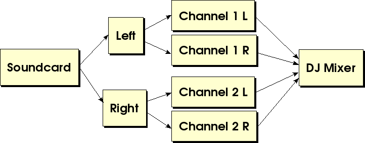
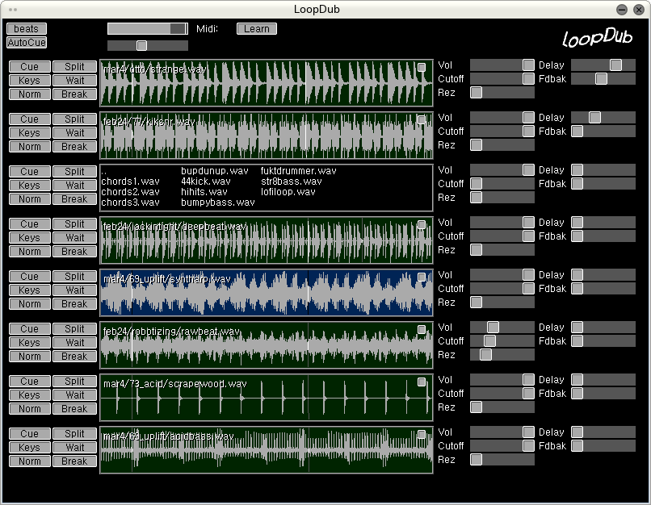

hosted by:
Welcome to LoopDub, an audio application for live loop manipulation.
Important: please read this WHOLE document before you give up! It's not difficult to use, I promise.
The current version of LoopDub can be downloaded here. It is currently only working on Linux, but the next version will support Windows. See the INSTALL and README documents in the release for instructions on how to get it working.
If it has been installed correctly (See INSTALL), you can run loopdub by typing "loopdub" into a command-line, with the directory of your loops as the argument:
# loopdub /home/me/myloops/
Personally I have created a launcher on my GNOME desktop to do this for me, but the installer does not do this.
The output of your soundcard is split in two, for two-channel mono sound. One side is used as the master out, and the other side is used for Cue. I use RCA splitter cables to get sound into both channels on the mixer. Like so:

In the future LoopDub will likely support more configurations, like using a second soundcard for the queue, or an extra channel on a multichannel soundcard. An option for having stereo sound and not using a cue channel is also in the works.

Just a quick breakdown until I have time to write more extensive documentation:
Beats: click on this until it reads the correct number of beats in your loop. Then corresponding BPM will be displayed next to the button.
Autocue: when checked, the "cue" button will automatically be selected when a new file is loaded.
VU Meter:Shows the current amplitude of final output signal.
Master Volume:Adjust this slider when VU Meter is very close to the top, otherwise clipping may occur, which doesn't sound very nice.
Learn: After selecting your midi input device, click this button to "learn" which controls are for what. A sequence of controls is highlighted, and you move the corresponding control on your MIDI keyboard to teach LoopDub which function it corresponds to. At the moment I usually use my sliders for volume and my knobs for effects. This means I am currently not using 4 of the knobs.
Cue: Puts the loop on the cue channel.
Split: Divides the loop into smaller pieces. These splits are used for a couple of different things. You can click and drag on the loop with your mouse to select a sequence of "parts" to be looped instead of the whole thing. This can be useful for changing how a beat sounds or looping a strange voice clip. Also, the "Wait" function will drop the sound back in on the next split boundary, which is useful if you don't want to wait until the end of the loop.
Keys: Chooses this loop as the "key" loop. Only one loop can be chosen at a time. When any loop is chosen as the key-control loop, it will no longer be played along with the other loops. Instead, it will be triggered when you press keys on your keyboard, at the correct pitch. This allows you to play melodies in realtime along with the other loops.
Wait: Cuts the volume on the loop until the next split boundary. This is useful when you are cueing a track and want to have it come in on a particular bar instead of manually having to throw the volume slider. Once you click "wait", you can move the volume slider into position without affecting the output, and it will come in when the position indicator hits either the next split boundary or the beginning of the loop.
Norm: This will normalize the loop. Useful if you've forgetten to do this beforehand. Sometimes a quiet sample will have difficulty competing with the rest of the sounds in the mix.
Break: This is not yet implemented, but it will allow you to use the keyboard to trigger the loop from within different parts, based on the current split configuration. In other words, you will be able to re-sequence a breakbeat or whatever you want, in realtime.
Numbers 1 - 8: Pressing numbers 1 through 8 on your keyboard, you will notice that the corresponding loop number turns to a blue background. This means that this loop sample is selected for being modified by MIDI controls. You may also select or deselect a loop using a key on your MIDI keyboard, as long as no loops are selected as the "key control" or "break" loop. It is known that there is not yet a configuration for MIDI channels, this is on the TODO list.
Enter: Starts and stops audio output.
Alt-Enter: Toggles fullscreen mode. (Very nice for live sets, try it!)
Escape: Exits LoopDub.
There are many things that need to be changed and improved and added to LoopDub, however I will list a couple here that are imperative that users know about:
Get in touch with me at
Last edited by Steve Sinclair: Mar 12, 2005